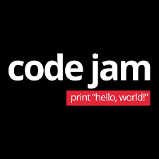
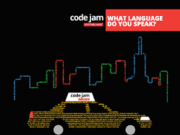
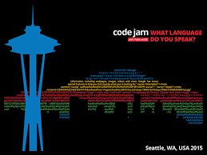
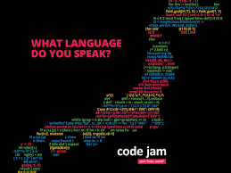
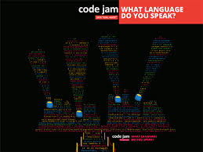

Code Jam
Google Code Jam calls on programmers around the world to put their skills to the test by solving multiple rounds of algorithmic puzzles. The online rounds conclude in the World Finals, which rotates globally. In addition to being challenging and fun, Code Jam problems can help you develop your coding and programming skills. If you've never tried Code Jam, what are you waiting for? If you're a returning participant, welcome back, and thanks for stopping by.





What is Code Jam?
Google Code Jam calls on programmers around the world to put their skills to the test by solving multiple rounds of algorithmic puzzles. The online rounds conclude in the World Finals, which rotates globally. In addition to being challenging and fun, Code Jam problems can help you develop your coding and programming skills. If you've never tried Code Jam, what are you waiting for? If you're a returning participant, welcome back, and thanks for stopping by.
Google Code Jam calls on programmers around the world to put their skills to the test by solving multiple rounds of algorithmic puzzles. The online rounds conclude in the World Finals, which rotates globally. In addition to being challenging and fun, Code Jam problems can help you develop your coding and programming skills. If you've never tried Code Jam, what are you waiting for? If you're a returning participant, welcome back, and thanks for stopping by.
Google Code Jam calls on programmers around the world to put their skills to the test by solving multiple rounds of algorithmic puzzles. The online rounds conclude in the World Finals, which rotates globally. In addition to being challenging and fun, Code Jam problems can help you develop your coding and programming skills. If you've never tried Code Jam, what are you waiting for? If you're a returning participant, welcome back, and thanks for stopping by.
The Code Jam 2017 Qualification Round has officially begun. The Online Qualification round will remain open for 27 hours, ending Sunday, April 9 at 7:30 am.
You can register until the end of the Qualification Round. You likely will not need the full 27 hours, but you can spend as little or as much time as you like.
You need at least 25 points to advance to the Round 1s.